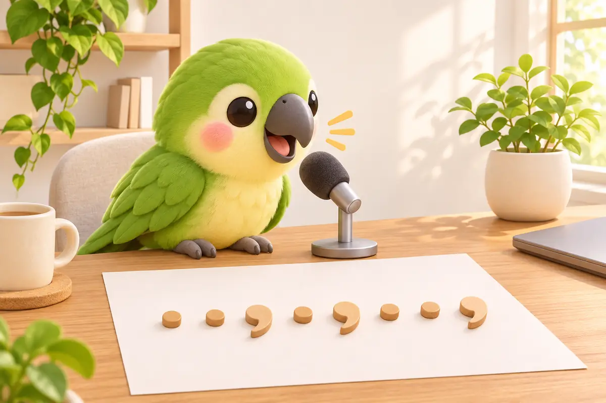

用 iPhone 相機掃描學舌鳥 iPhone 鍵盤 · NT$150 買斷
用 iPhone 相機掃描學舌鳥 iPhone 鍵盤 · NT$150 買斷
我是 Sona Orbit，一個人開發學舌鳥的獨立開發者。學舌鳥是我做的免費 Mac 語音輸入工具，所以第 6 節會提到它。內建聽寫的步驟和限制都照 Apple 官方說明（在 Mac 上聽寫訊息和文件、如果「聽寫」未如預期運作、macOS 功能特色適用範圍），查證日期是 2026 年 11 月 16 日。不同版本的 macOS 選單位置可能略有不同，請以你的畫面為準。學舌鳥的功能與選單名稱以 0.4.20 為準。
1. 先看結論：三個步驟打開
- 打開開關。「蘋果」選單 →「系統設定」→ 側邊欄的「鍵盤」→ 找到「聽寫」，把它打開，再按「啟用」。
- 選快速鍵和語言。同一個地方有「快速鍵」和「語言」。語言按「編輯」，勾選你要說的中文。
- 到任何輸入框試一次。把游標放在備忘錄或訊息的輸入框，按快速鍵，游標反白跳動或聽到提示聲後開始說話。說完按 Esc。
偶爾講一兩句，做到這裡就夠了。下面幾節是每一步的細節，以及遇到問題時怎麼查。
2. 打開 macOS 內建聽寫
照 Apple 的說明，完整步驟如下。
- 按螢幕左上角的「蘋果」選單，選「系統設定」。
- 在左邊側邊欄按「鍵盤」。項目很多，可能要往下捲才看得到。
- 在右邊找到「聽寫」，把開關打開，跳出確認視窗時按「啟用」。
- 系統可能會問要不要分享錄音來改進 Siri 和聽寫。想分享按「分享錄音」，不想就按「稍後再說」。兩種選擇都能正常聽寫。
之後想改變主意，可以到「系統設定 → 隱私權與安全性 → 分析與改進功能」，開關叫「改進 Siri 與聽寫」。
macOS 12 或更早的版本沒有「系統設定」，同樣的開關在「系統偏好設定 → 鍵盤 → 聽寫」。
有一種情況會讓聽寫打不開。Apple 的說明寫到，「語音控制」（輔助使用裡用聲音操作整台 Mac 的功能）開著的時候，標準的聽寫不能用，文字要改由語音控制來聽寫。

3. 開始和停止：快速鍵怎麼設
打開聽寫後，有三種方式可以開始說話。
- 麥克風鍵。鍵盤最上面那排如果有麥克風圖示的按鍵，按一下再放開就開始聽寫。要注意是「按一下」，按住不放會叫出 Siri。
- 聽寫快速鍵。在「鍵盤」設定的「聽寫」區，按「快速鍵」選單挑一個。清單裡沒有喜歡的，選「自訂」再按下你要的組合，Apple 舉的例子是 Option + Z。
- 選單。在大部分 App 的選單列選「編輯 → 啟動聽寫」。
游標反白並跳動，或聽到提示聲，就可以開始說。說完有三種停法：按 Esc、再按一次麥克風鍵，或再按一次聽寫快速鍵。什麼都不按的話，安靜 30 秒後聽寫會自己停。
在 Apple 晶片的 Mac 上，聽寫中可以直接用鍵盤打字，不必先停下來；你停止打字後可以接著說。
辨識結果裡有藍色底線的字，代表系統不太確定。按一下那個字可以選其他候選，也可以直接重打。
4. 中文怎麼說：語言、標點、換行
加入中文
在「鍵盤」設定的「聽寫」區，按「語言」旁邊的「編輯」，勾選你要用的語言和地區。可以同時勾好幾種，例如國語（台灣）和英文。聽寫時游標旁會顯示目前的語言，按一下就能切換；鍵盤有地球鍵的話，也可以按地球鍵選。
聽寫會照目前選的語言辨識，要換語言得自己切。
標點
在 Apple 的功能清單裡，「自動加標點符號」支援國語（台灣）。也就是說，逗號、句號和問號會自動加上。不想要的話，到同一個設定區把「自動標點符號」關掉。
其他符號要用說的，例如說「驚嘆號」。表情符號也可以，例如「愛心表情符號」。
換行和分段
| 說出 | 效果 |
|---|---|
| 換行 | 等於按一次 Return |
| 新增段落 | 等於按兩次 Return |
換行和新段落會在你說完、結束聽寫時才出現。完整的指令清單在 Apple 的聽寫文字的指令。
聲音會不會上傳
Apple 的功能清單把「裝置端聽寫」支援的語言另外列出來。我查的時候，清單裡有國語（中國大陸）和粵語（香港），沒有國語（台灣）。所以用台灣的國語聽寫，要先假設需要網路。最準的確認方法是看你自己的 Mac。打開聽寫後，「鍵盤」設定裡「聽寫」下方有一段文字，會寫你的語音是在裝置上處理還是送到伺服器。

5. 開不起來？照這張清單檢查
按了快速鍵沒反應，或說了話沒有字，照 Apple 的排障說明由上往下查：
| 狀況 | 先檢查 |
|---|---|
| 按快速鍵沒反應 | 「鍵盤」設定裡的「聽寫」有沒有開；你按的是不是設定裡選的那組快速鍵；「語音控制」是不是開著 |
| 按麥克風鍵跑出 Siri | 按太久了。按一下就放開才是聽寫 |
| 有反應但沒有字 | 「麥克風來源」選的是不是你正在用的麥克風。桌機沒有內建麥克風，要接外接麥克風並在「聲音」或「鍵盤」設定選它 |
| 字出得斷斷續續 | 到「系統設定 → 聲音 → 輸入」看輸入音量夠不夠；麥克風有沒有被衣服或東西擋住；環境太吵時改用耳機麥克風 |
| 出來的字完全不對 | 聽寫語言是不是選成別的語言。游標旁會顯示目前語言 |
| 突然不能用 | 網路有沒有斷。到「系統設定 → 網路」確認 |
| 說到一半自己停了 | 安靜 30 秒會自動停止，再按一次快速鍵繼續 |

6. 想離線、想長時間用：另外裝語音輸入工具
內建聽寫免安裝，偶爾講幾句很合適。下面幾種情況，可以考慮另外裝一個語音輸入工具：
- 想在沒有網路的地方用中文語音輸入，或不希望聲音離開 Mac。
- 一句話裡中英夾雜，不想一直切語言。
- 同事的名字、產品名老是被聽錯，想要有地方把正確寫法記下來。
- 想要「按住說、放開就貼上」的節奏。
這類工具有好幾款，付費和免費都有，我在7 款 Mac 語音輸入比較裡整理過。這裡用我自己做的學舌鳥當例子，說明這類工具「怎麼開」。跟內建聽寫比，多了權限和下載模型兩步：
- 安裝。打開下載的 dmg，把學舌鳥拖進「應用程式」資料夾，再從「應用程式」打開。
- 給兩個權限。第一次打開會帶你到系統設定允許「麥克風」和「輔助使用」。麥克風用來收音；輔助使用讓它把文字貼到你正在用的 App，也用來接收快捷鍵。
- 下載語音模型。選一個模型下載。下載一次就好，之後辨識在這台 Mac 上進行，沒有網路也能聽寫。
- 試一次。引導畫面會請你按住快捷鍵說「測試一下」，一次確認熱鍵、麥克風、辨識、貼上四項都正常。
預設快捷鍵是 右 ⌥ ＋ 右 ⌘。按住說話，放開後文字貼到游標位置；輕按一下則會持續聽，再輕按一次結束；Esc 取消。外接鍵盤沒有右邊的 ⌥ 或 ⌘，可以到「設定 → 說話 → 快捷鍵」換別的組合。
兩者的差別整理成一張表。
| macOS 內建聽寫 | 學舌鳥 | |
|---|---|---|
| 安裝 | 不用，系統內建 | 下載 dmg，另外下載語音模型 |
| 費用 | 免費 | 免費 |
| 適用的 Mac | Intel 和 Apple 晶片都有 | 只支援 Apple 晶片，macOS 11 以上 |
| 台灣的國語 | 不在裝置端聽寫的語言清單裡 | 在 Mac 本機辨識，離線可用 |
| 標點 | 自動加逗號、句號、問號；其他用說的 | 本機補全形標點和中英文之間的空格 |
| 聽錯的專有名詞 | 手動改 | 可以加進個人詞典 |
| 換行 | 說「換行」或「新增段落」 | 有「貼上後自動換行」開關，每段結尾自動換一行 |
想了解模型怎麼挑，可以看Mac 本機語音辨識模型怎麼選；人名和術語老是錯，看從詞典到專屬語音模型的三層解法。開了之後的日常用法，例如整理口語和翻譯，在Mac 中文語音輸入怎麼用。
7. 常見問題
Mac 語音輸入的開關在哪裡？
在「蘋果」選單 →「系統設定」→ 側邊欄的「鍵盤」→「聽寫」。打開後按「啟用」。macOS 12 或更早的版本在「系統偏好設定 → 鍵盤 → 聽寫」。
我的鍵盤沒有麥克風鍵，怎麼開始聽寫？
到「鍵盤」設定的「聽寫」區，在「快速鍵」選單選一組，或選「自訂」按下自己要的組合。也可以在 App 的選單列選「編輯 → 啟動聽寫」。
Mac 內建聽寫可以離線用中文嗎？
要看語言。Apple 的功能清單裡，裝置端聽寫有國語（中國大陸）和粵語（香港），我在 2026 年 11 月查的時候沒有國語（台灣）。實際情況請看你的「鍵盤」設定裡「聽寫」下方的說明文字。
聽寫為什麼講到一半會停？
Apple 的說明寫到，偵測不到語音達 30 秒就會自動停止。再按一次快速鍵或麥克風鍵就能繼續。
為什麼聽寫的開關打不開或沒有作用？
先看「語音控制」是不是開著。語音控制開啟時，標準的聽寫不能用。其他常見原因是快速鍵按錯、麥克風來源選錯，或網路斷線。